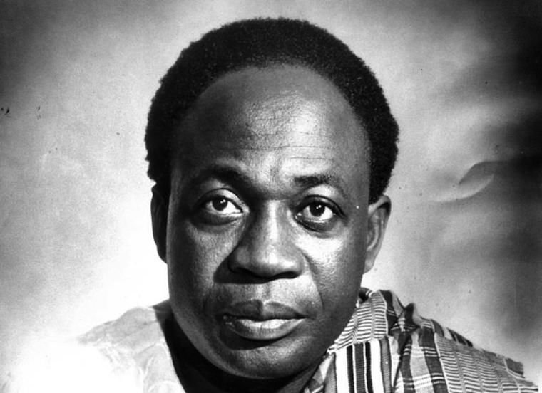

Osagyefo Dr. Kwame Nkrumah
The Black Man Is Capable Of Managing His Own Affairs

Capitalism is a development by refinement from feudalism
Here's a time line of Dr.Kwame Nkrumah's life:
- 1909- Born in Nkroful, Gold Coast now Ghana
- 1957- The first Prime Minister and President of Ghana having help the Gold Coast to Independence from the Britain
- 1958- Got Married and give birth to Three Children
- 1960- Ghanaians approved a new constitution and elected Nkrumah (President)
- 1966- In February, while Nkrumah was on a state visit to North Vietnam and elva, his government was overthrown in violent coup d'e'tat led by the national military and police force.
Nkrumah actually promoted Pan-Africanism from the beginning of his President
Africa liberation requires study, work and unity guilded by our history. It requires every African those at home and those who are prisoners of war abroad to do their part.
--Osagyefo Dr. Kwame Nkrumah
If you have time, you should read more about this incredible human being on his wikipedia entry